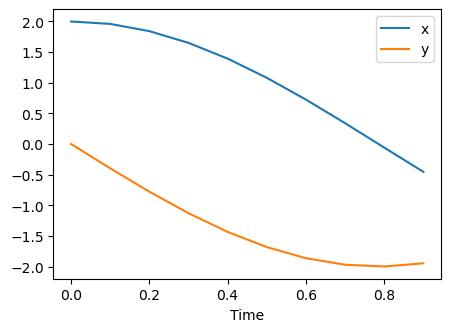
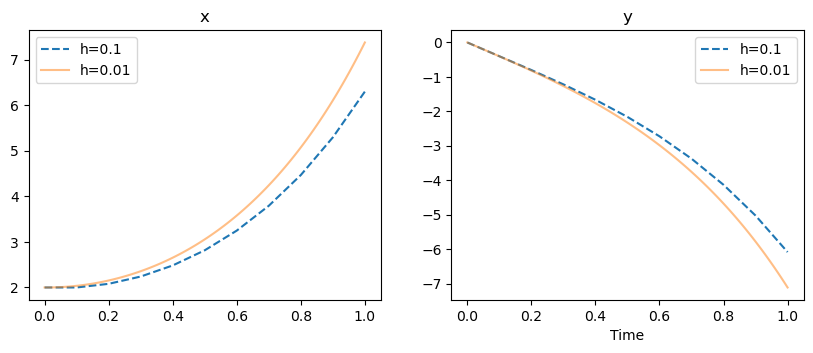
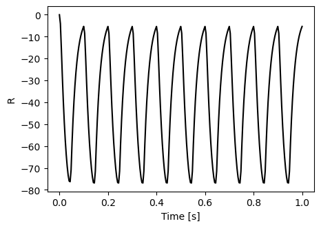

Chapter 5¶
Approximation and simulation¶
Code by : Abolfazl Ziaeemehr - https://github.com/Ziaeemehr

[ ]:
# uncomment and run this line to install the package on colab
# !pip install "git+https://github.com/Ziaeemehr/spikes.git" -q
[1]:
import sympy
import sympy as sp
import numpy as np
from scipy.linalg import eig
import matplotlib.pyplot as plt
from IPython.display import display, Math
from spikes.solver import solve_system_of_equations
sympy.init_printing()
\begin{align*} \frac{dx}{dt} &= 2y \\ \frac{dy}{dt} &= -2x \end{align*}
\(x(0)=2, y(0)=0, h=0.1, 0.01, T=1\)
\[\begin{split}\frac{d}{dt}
\begin{pmatrix}
x \\
y
\end{pmatrix} =
\begin{pmatrix}
0 & -2 \\
-2& 0
\end{pmatrix}
\begin{pmatrix}
x \\
y
\end{pmatrix}\end{split}\]
[2]:
# solving analytically and numerically using odeint:
A = np.array([[0,2],[-2,0]])
B = np.array([0,0])
X0 = np.array([2,0])
trange1 = np.arange(0, 1, 0.1)
trange2 = np.arange(0, 1, 0.01)
Sol, xvalues1 = solve_system_of_equations(A, B, X0, trange1)
plt.figure(figsize=(5,3.5))
plt.plot(trange1, xvalues1[0], label="x")
plt.plot(trange1, xvalues1[1], label="y")
plt.legend();
plt.xlabel('Time')
plt.legend();
Sol
[2]:
$\displaystyle \left[ 2 \cos{\left(2 t \right)}, \ - 2 \sin{\left(2 t \right)}\right]$

Exercise 2, Solving with Euler method¶
[3]:
def system(t, x0):
dxdt = -2 * x0[1]
dydt = -2 * x0[0]
return np.array([dxdt, dydt])
def integrate_euler(ti, tf, function, h, x0):
x = np.zeros((2, int((tf - ti) / h) + 1))
x[:, 0] = x0
t = np.linspace(ti, tf, int((tf - ti) / h) + 1)
for i in range(1, x.shape[1]):
x[:, i] = x[:, i-1] + h * function(ti + h * i, x[:, i-1])
return t, x
[4]:
t1, x1 = integrate_euler(0,1, system, 0.1, X0)
t2, x2 = integrate_euler(0,1, system, 0.01, X0)
plt.figure(figsize=(10,3.5))
plt.subplot(1,2, 1)
plt.plot(t1, x1[0], label="h=0.1", ls="--")
plt.plot(t2, x2[0], label="h=0.01", alpha=.5)
plt.title("x")
plt.legend();
plt.subplot(1,2,2)
plt.plot(t1, x1[1], label="h=0.1", ls="--")
plt.plot(t2, x2[1], label="h=0.01", alpha=.5)
plt.title("y")
plt.xlabel('Time')
plt.legend();

Exercise 1.¶
\[\begin{split}\begin{align*}
\frac{dR}{dt} &= \frac{1}{0.02}(-R + S(P)) \\
S(P) &= \begin{cases}
\frac{100P^2}{25 + P^2} & \text{for } P \geq 0 \\
0 & \text{for } P < 0
\end{cases} \\
P(t) &= 20\sin(2\pi10t)
\end{align*}\end{split}\]
where \(R(0)=0, T=1, h=0.004\).
[5]:
def P(t):
return 20 * np.sin(2 * np.pi * 10 * t)
def S(p):
return (100 * p**2) / (25 + p**2) if p >= 0 else 0
def system(t, x0):
dRdt = -1/0.02 * (x0 + S(P(t)))
return dRdt
def integrate_rk4(ti, tf, function, h, x0):
x = np.zeros((len(x0), int((tf - ti) / h) + 1))
x[:, 0] = x0
t = np.linspace(ti, tf, int((tf - ti) / h) + 1)
for i in range(1, x.shape[1]):
k1 = h * function(t[i-1], x[:, i-1])
k2 = h * function(t[i-1] + 0.5 * h, x[:, i-1] + 0.5 * k1)
k3 = h * function(t[i-1] + 0.5 * h, x[:, i-1] + 0.5 * k2)
k4 = h * function(t[i-1] + h, x[:, i-1] + k3)
x[:, i] = x[:,i-1] + (k1 + 2*k2 + 2*k3 + k4) / 6
return t, x
[6]:
t, R = integrate_rk4(0,1, system, 0.004, [0])
t.shape, R.shape
plt.figure(figsize=(5,3.5))
plt.plot(t, R[0], c='k');
plt.xlabel('Time [s]')
plt.ylabel("R");

[ ]: